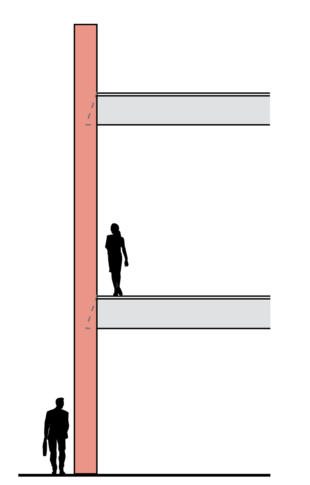
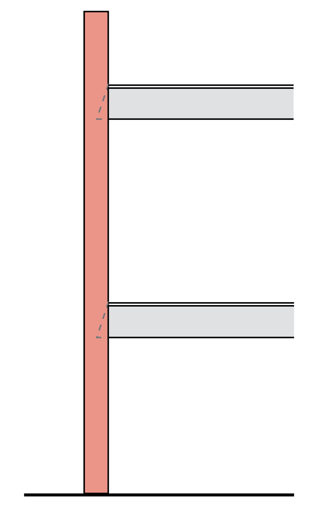
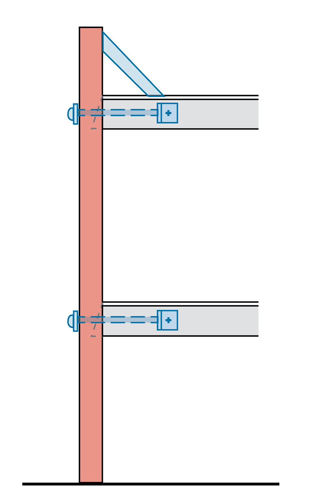

Preventing earthquake damage
Newer buildings are designed to ride out an earthquake, but old brick and stone structures are vulnerable to collapse. To save lives and reduce – but not prevent – damage, these unreinforced masonry buildings would need to be retrofitted.
Unreinforced masonry
The vast majority of brick and stone buildings constructed before the 1940s are unreinforced masonry (URM). Most have brick walls and wood-frame floors and roofs. Very few were built after World War II and no new URMs were allowed in Seattle after 1977. A tell-tale sign of URM construction is what’s called header courses – lines of bricks turned on end.

During an earthquake
Unreinforced masonry buildings are vulnerable because the walls and parapets aren’t securely tied to the floors and roof. In an earthquake, parapets can break away, walls pull apart and the floors collapse. Retrofitting reduces the danger.
Parapet breaks off (URM)

Building collapses (URM)

Building stays intact (retrofit)

Retrofitting old brick buildings
Upgrading an old building to make it more earthquake-safe involves connecting brick walls and parapets to the roof and floors.
Click on numbers for details.

1
2
3
4
5
6
Sources: Seattle Department of Planning and Development, Nancy Devine of Seattle Department of Planning and Development, FEMA, American Society of Civil Engineers, seblog.strongtie.com, Mark Pierepiekarz of MRP Engineering
STEPHANIE REDDING AND AUDREY CARLSEN / THE SEATTLE TIMES